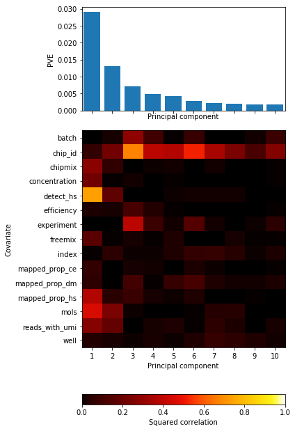
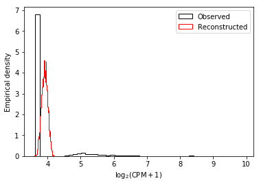
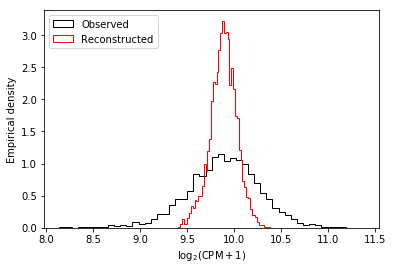
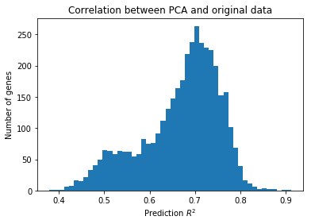

Dimensionality reduction
Introduction
The fundamental inference task is to infer \(p(z_i \mid x_i)\), where \(x_i\) is the \(p\)-dimensional observation (one sample), \(z_i\) is a \(k\)-dimensional latent variable, and \(k \ll n\).
Why do we want to do this?
- determine how much variation in the data is explained by known technical factors
- remove that variation before trying to explain the data using biological covariates
The typical procedure to apply PCA to single cell RNA-Seq data is:
- Normalize counts
- Select a subset of genes, e.g. those detected in some minimum proportion of cells, with high mean/variability of expression, etc.
- Compute singular vectors (principal components) of the count matrix
- Take loadings on the top \(k\) singular vectors as the latent \(z_i\)
- Correlate the loadings with the known covariates.
Assuming this is the right way to quantify how much variation in the data is explained by covariates, there are several problems with this procedure. Prior work showed that (probabilistic) PCA fails to accurately infer \(z_i\) under a variety of scenarios (Pierson et al 2015):
- high missingness
- stringent gene selection
Several methods have been proposed to improve inference of latent gene expression:
- ZIFA (Pierson et al 2015)
- ZINB-WAVE (Risso et al 2018)
- scVI (Lopez et al 2017)
- countae (Eraslen et al 2017)
The main disadvantage of the first two methods is high computational cost and poor scaling with data size. The main disadvantage of the last two is they rely on neural networks making interpretation more difficult.
It is also worth asking whether this is actually the right way to quantify how much variation in the data is explained by covariates. A different, but still natural way to phrase the question is to ask whether the expression values can be accurately predicted using known covariates. This procedure naturally suggests a confounder correction method: regress out known covariates from the expression values.
This idea is related to half-sibling regression (Schölkopf et al 2016): we can only accurately predict gene expression using genes on other chromosomes if there is true trans-regulation or systematic confounding. Again, the natural solution is to regress out the rest of the genome from the gene expression values.
Importantly, these analyses are not directly usable for confounder correction for QTL mapping. Instead, we first need to learn the underlying distributions of the data and then perform dimensionality reduction on those parameters.
Here, we perform the following analyses:
- We perform PCA on the post-QC data and show that most variation is still explained by variation in sequencing metrics
- We provide an accelerated implementation of zero-inflated factor analysis
- We fit a variational autoencoder to the data
- We predict mean expression and dropout probability using covariates only
Read the data
Read the full data matrix and apply the QC filters.
umi = pd.read_table('/home/aksarkar/projects/singlecell-qtl/data/scqtl-counts.txt.gz', index_col=0) annotations = pd.read_table('/home/aksarkar/projects/singlecell-qtl/data/scqtl-annotation.txt') keep_samples = pd.read_table('/home/aksarkar/projects/singlecell-qtl/data/quality-single-cells.txt', index_col=0, header=None) keep_genes = pd.read_table('/home/aksarkar/projects/singlecell-qtl/data/genes-pass-filter.txt', index_col=0, header=None) umi = umi.loc[keep_genes.values.ravel(),keep_samples.values.ravel()] annotations = annotations.loc[keep_samples.values.ravel()]
umi.shape
(10886, 3910)
Principal components analysis
Use PPCA (Tipping et al 1999) to incorporate gene-specific mean
expression. Use the edgeR psuedocount.
libsize = umi.sum(axis=0) psuedocount = .5 * libsize / libsize.mean() log_cpm = (np.log(umi + psuedocount) - np.log(libsize + 2 * psuedocount) + 6 * np.log(10)) / np.log(2) ppca = skd.PCA(n_components=10) loadings = ppca.fit_transform(log_cpm.values.T)
plt.clf() fig, ax = plt.subplots(2, 2) fig.set_size_inches(12, 12) for i in range(2): for j in range(i, 2): ax[i][j].scatter(loadings[:,i], loadings[:,j + 1]) ax[i][j].set_xlabel('PC{}'.format(j + 2)) ax[i][j].set_ylabel('PC{}'.format(i + 1))

Correlate PCs with known continuous covariates.
def extract_covars(annotations): return pd.Series({ 'batch': int(annotations['batch'][1:]), # Recode experiment YYYYMMDD so it is strictly increasing with time 'experiment': 10000 * (annotations['experiment'] % 10000) + annotations['experiment'] // 10000, 'index': annotations['index'], 'concentration': annotations['concentration'], 'reads': annotations['raw'], 'mols': annotations['molecules'], 'mapped_prop_hs': annotations['mapped'] / annotations['raw'], 'mapped_prop_dm': annotations['reads_dm'] / annotations['raw'], 'mapped_prop_ce': annotations['reads_ce'] / annotations['raw'], 'detect_hs': annotations['detect_hs'], 'chipmix': annotations['chipmix'], 'freemix': annotations['freemix'], })
cont_covars = annotations.apply(extract_covars, axis=1)
def correlation(pcs, cont_covars): """Return squared correlation between principal components and covariates pcs - DataFrame (n x k) cont_covars - DataFrame (n x q) """ result = [] for i in pcs: for j in cont_covars: keep = np.isfinite(cont_covars[j].values) result.append([i, j, np.square(st.pearsonr(pcs[i][keep], cont_covars[j][keep]))[0]]) return pd.DataFrame(result, columns=['pc', 'covar', 'corr'])
Correlating with individual is non-obvious because it is a categorical variable, and simply recoding it as integer is sensitive to ordering. Instead, regress the loading of each cell on each principal component \(l_{ij}\) against indicator variables for each individual \(X_{ik}\).
\[ l_{ij} = \sum_j X_{ik} \beta_{jk} + \mu + \epsilon \]
From the regression fit, we can compute the coefficient of determination \(R^2\) for each PC \(j\):
\[ 1 - \frac{l_j - X \hat{\beta}_j}{l_j - \bar{l_j}} \]
def categorical_r2(loadings, annotations, key): categories = sorted(annotations[key].unique()) onehot = np.zeros((annotations.shape[0], len(categories)), dtype=np.float32) onehot[np.arange(onehot.shape[0]), annotations[key].apply(lambda x: categories.index(x))] = 1 m = sklm.LinearRegression(fit_intercept=True, copy_X=True).fit(onehot, loadings) return pd.DataFrame({ 'pc': np.arange(10), 'covar': key, 'corr': 1 - np.square(loadings - m.predict(onehot)).sum(axis=0) / np.square(loadings - loadings.mean(axis=0)).sum(axis=0)})
cat_covars = annotations[['chip_id', 'well']] corr = pd.concat( [correlation(pd.DataFrame(loadings), cont_covars)] + [categorical_r2(loadings, annotations, k) for k in cat_covars]) corr = corr.pivot(index='covar', columns='pc')
def plot_pca_covar_corr(pca, corr): plt.clf() fig, ax = plt.subplots(2, 1, gridspec_kw={'height_ratios': [.25, .75]}, sharex=True) fig.set_size_inches(8, 12) ax[0].bar(np.arange(len(pca.components_)), pca.explained_variance_ratio_) ax[0].set_xticks(np.arange(len(pca.components_))) ax[0].set_xticklabels([str(x) for x in np.arange(1, len(pca.components_) + 1)]) ax[0].set_xlabel('Principal component') ax[0].set_ylabel('PVE') im = ax[1].imshow(corr.values, cmap=colorcet.cm['fire'], vmin=0, vmax=1, aspect='auto') cb = plt.colorbar(im, ax=ax[1], orientation='horizontal') cb.set_label('Squared correlation') ax[1].set_xlabel('Principal component') ax[1].set_yticks(np.arange(corr.shape[0])) ax[1].set_yticklabels(corr.index) ax[1].set_ylabel('Covariate')
plot_pca_covar_corr(ppca, corr)

The top 10 PCs define a low-rank approximation to the original data, so we should ask how good the approximation was, by comparing the distribution of the original data to the distribution of the reconstructed data.
reconstructed = ppca.inverse_transform(loadings)
def plot_reconstruction(obs, approx): plt.clf() plt.hist(obs, bins=50, density=True, histtype='step', color='k', label='Observed') plt.hist(approx, bins=50, density=True, histtype='step', color='r', label='Reconstructed') plt.legend() plt.xlabel('$\log_2(\mathrm{CPM} + 1)$') plt.ylabel('Empirical density')
For genes with high proportion of zero counts, the low-rank approximation is mainly capturing the mean of the data, which is maybe more indicative of the zero proportion in the data rather than the actual mean of the data.
num_zero = np.isclose(umi, 0).sum(axis=1) max_zero = num_zero.argmax() plot_reconstruction(log_cpm.iloc[max_zero], reconstructed[:,max_zero])

This is true even for genes with the lowest proportion of zero counts.
min_zero = num_zero.argmin()
plot_reconstruction(log_cpm.iloc[min_zero], reconstructed[:,min_zero])

This might still be OK, if the reconstructed gene expression values are predictive of the original gene expression values.
pred_score = [sklm.LinearRegression(fit_intercept=True).fit(x.values.reshape(-1, 1), y).score(x.values.reshape(-1, 1), y) for (_, x), (_, y) in zip(log_cpm.iteritems(), pd.DataFrame(reconstructed.T).iteritems())]
plt.clf() plt.hist(pred_score, bins=50) plt.xlabel('Prediction $R^2$') plt.ylabel('Number of genes') plt.title('Correlation between PCA and original data')
Text(0.5,1,'Correlation between PCA and original data')

The distribution of squared correlations suggest that the low rank approximation is better for some genes than others, i.e. that there could be gene-specific or gene module-specific effects. These are unlikely to be captured by PCA or factor analysis.
Zero-inflated factor analysis
Fit ZIFA (Pierson et al 2015).
<<dim-reduction-imports>> <<read-data>> <<log_cpm>> latent, params = zifa.fitModel(Y=log_cpm.values.T, K=10, p0_thresh=.7) np.savetxt('latent.txt.gz', latent)
sbatch --partition=broadwl --time=400 --mem=16G --out=zifa.out --err zifa.err #!/bin/bash source activate scqtl python zifa.py
Variational autoencoder
PCA could be sensitive to normalization and zeros, so fit a deep generative model directly on counts instead. This method scales better than fitting ZINB directly via maximum likelihood because the number of parameters doesn't grow with the size of the data.
\[ p(x_i \mid z_i) = \mathrm{ZINB}(\pi(z_i), \lambda(z_i), \phi(z_i)) \]
\[ p(z_i) = N(0, I) \]
\[ q(z_i \mid x_i) = N(\mu(x), \sigma^2(x)) \]
sbatch --partition=gpu2 --gres=gpu:1 --mem=16G --out vae.out #!/bin/bash source activate scqtl autoencoder /home/aksarkar/projects/singlecell-qtl/data/scqtl-counts.txt.gz .